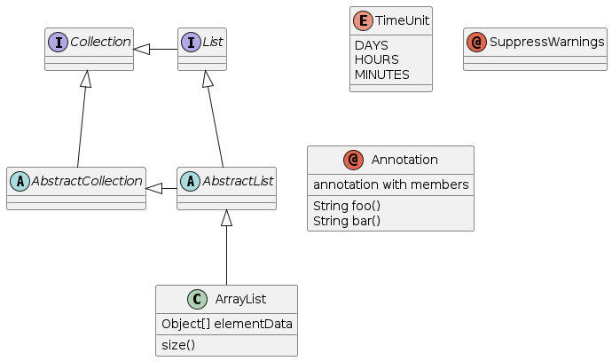

jplantuml4r is based on a java library and must have a working version of Java and rJava installed prior to installation. The following commands can ensure that your rJava installation is working.
install.packages("rJava")
rJava::.jinit()
rJava::J("java.lang.System")$getProperty("java.version")To install jplantuml4r in R:
library(devtools)
# you can install from the local copy:
load_all("~/Git/jplantuml4r")
# or from your github repository:
# install_github("io.github.terminological/jplantuml4r", args = c("--no-multiarch"))
library(jplantuml4r)Instructions for your users…
Hello world - R functional style (static methods)
example = "
@startuml
abstract class AbstractList
abstract AbstractCollection
interface List
interface Collection
List <|-- AbstractList
Collection <|-- AbstractCollection
Collection <|- List
AbstractCollection <|- AbstractList
AbstractList <|-- ArrayList
class ArrayList {
Object[] elementData
size()
}
enum TimeUnit {
DAYS
HOURS
MINUTES
}
annotation SuppressWarnings
annotation Annotation {
annotation with members
String foo()
String bar()
}
@enduml
"
file = jplantuml4r::save_plant_uml(example, outFile = fs::path(tempdir(),"docs/articles/demo.png"), format="png")
#> WARNING: sun.reflect.Reflection.getCallerClass is not supported. This will impact performance.
#> Initialised jplantuml4r
if (interactive() || identical(Sys.getenv("IN_PKGDOWN"), "true")) {
message("as we are running in pkgdown and rendering the site we copy the output files to the correct location to be picked up by the pkgdown site")
fs::file_copy(file, here::here("vignettes/demo.png"), overwrite = TRUE)
file = here::here("vignettes/demo.png")
}
#> as we are running in pkgdown and rendering the site we copy the output files to the correct location to be picked up by the pkgdown site
knitr::include_graphics(file)
jplantuml4r::supported_formats()
#> [1] "EPS" "EPS_TEXT" "ATXT"
#> [4] "UTXT" "XMI_STANDARD" "XMI_STAR"
#> [7] "XMI_ARGO" "XMI_SCRIPT" "SCXML"
#> [10] "GRAPHML" "PDF" "HTML"
#> [13] "HTML5" "VDX" "LATEX"
#> [16] "LATEX_NO_PREAMBLE" "BASE64" "BRAILLE_PNG"
#> [19] "PREPROC" "DEBUG" "PNG"
#> [22] "RAW" "SVG"